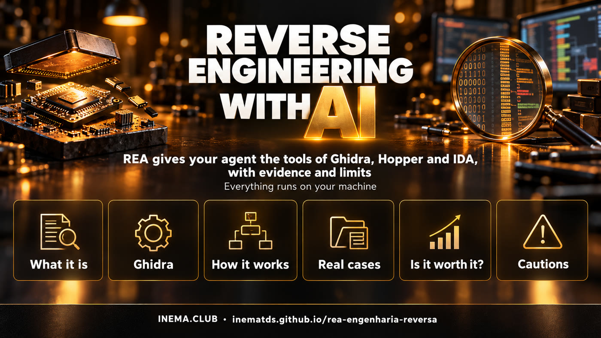

Your agent opens any program and explains how it works
REA gives Claude Code, Codex or Cursor the tools of reverse engineering. Here you understand the technology, see the real cases and find out whether it is worth it for you.
Reverse engineering is figuring out how a program works by looking only at the executable, without the source code. REA (Reverse Engineer Anything) is an open tool that connects your AI agent to decompilers such as Ghidra, from the NSA, and returns its conclusions with the proof and the limits of each one. It is for developers, security people and anyone who studies software. This guide gathers the links, explains everything in plain English, shows real cases and a test done here. To use it, you need Node.js and an AI agent in the terminal.
What it is
A bridge between your agent and the specialist tools
REA is not a new decompiler. It gives the agent simple commands on top of Ghidra, Hopper and IDA, which used to take weeks to master.

🔍 No source code
Opens native binaries (Mac, Windows, Linux), Electron/JavaScript apps, .NET, Android and websites, and shows how a function works.
🧾 With proof attached
Every answer comes in four parts: evidence, recovered map, limits and what was left unanswered. No "trust me" paragraph.
💻 All on your machine
The analysis runs locally. The analyzed program is not uploaded; only the results go to your agent's model.
How it works
From binary to explanation
Compiling erases names, types and comments. Reverse engineering is the way back, and REA puts the agent to work on that path.
You ask the agent→REA (MCP server)→Ghidra · Hopper · IDA→pseudocode, calls, strings→evidence + limits→the agent explains or implements
Compiling turns the code into machine instructions; the names disappear along the way.An Electron app still keeps the JavaScript (easy analysis, without running anything). A native app needs a decompiler.Ghidra (free, from the NSA), Hopper (lightweight) and IDA Pro (industry standard, expensive): REA uses whatever you have.The agent talks to REA over MCP: "open binary", "find strings", "who calls this function?".
Prerequisites
What you need
For JavaScript/Electron apps, Node is enough. For native binaries, you need an installed decompiler.
Node.js
Versions 22.19+, 24.11+ or 26+ (23 and 25 are not supported).
node -v
An agent with MCP
Claude Code, Claude Desktop, Codex, Cursor, Gemini CLI, Windsurf, OpenCode, Copilot CLI, VS Code and others.
claude --version
Decompiler (native only)
Ghidra (free, needs Java), Hopper or IDA. The setup can install Hopper, with your permission.
The setup shows the plan, backs up your configuration and asks before changing anything. It registers the MCP server and installs the investigation method (skill).
npx rea-agents setup# restart the agent afterwards
3
Check only what your task needs
The scoped doctor tests one agent or one specific engine, without failing on something you will not even use.
rea doctor --client claude_code --json
rea doctor --provider ghidra --json
4
Ask the agent
In plain language, with a program of yours or one you are authorized to analyze.
"Understand how search works in app X, show me the evidence
and build something similar in my project."
Real cases
What people have already done with it
Numbers taken from the repositories and the official site on Oct 10, 2026.
The vault. An app compiled without names (242+ FUN_… functions). The agent found the right function, recovered the 3 rules from the code and wrote a generator: AGNT-1001 opened it.DX-Ball (1990s). 528 candidate functions, 283 rewritten in C, 140 byte-for-byte identical. The left/right sound passed 3,205 tests against the original.Headphones. In ~30 min of back and forth, a user got his own one-button app to turn on wind reduction. Other cases: Notion's copy and paste and the bullet pattern of a PC-98 game.PhotoCraft. A different method (clean room, without looking at the binary): Photoshop rebuilt in Rust from public documentation + tests against the original. Still in alpha.
Worth it?
Who it is useful for, and who it is not
Assessment based on the documentation, the published cases and a test on this machine.
✅ Really useful
• Developers who want to understand how a very good app handles search, sync or the clipboard.
• Security and privacy: audit the apps on your machine and see what they send out.
• Recovering logic from a program of yours whose code was lost.
• Study, CTF and preservation of old software.
• People who build tools for AI: the evidence · map · limits · unknowns format is a great model.
⛔ Not for
• People who do not use a terminal: it requires Node and patience with versions that change every day (5.0 → 6.3 in three days).
• Copying a competitor's product: legally risky and misses the point.
• Heavily protected programs (VMProtect, heavy obfuscation) or with the logic on the server.
• Expecting miracles from any model: on deliberately protected binaries, even the best models solve only part of the cases (SRE-Bench).
🧪 Test done here (Oct 10, 2026)
We ran REA 6.3.0 (analyze-javascript-application, no Ghidra, no MCP) on a Linux ARM server. It worked on one of our own Node apps (97 files, 3.5 MB): in 20 s and 1.3 GB of RAM it returned a graph with 2,109 nodes and 3,104 edges, 2,508 findings and 5 declared limitations, without running the app. It hung on two targets that had a single huge JS file (the bundle of an installed Electron app and typescript/_tsc.js, 6 MB): it sat at 100% CPU for more than 20 min on the same file, ignored SIGTERM and only stopped with kill -9. Bottom line: it works well on normal-sized projects; on large apps, run it with a time cap (timeout -s KILL) and without node_modules. The full JSON is huge (241 MB here): day to day, let the agent query it through MCP instead of reading the whole file.
For those who sell software: assume any agent can map your app. What protects you is data, the server, distribution, trust and speed, not closed code.
Links
All the repositories
Third-party projects. Stars and versions checked on Oct 10, 2026.
README in PT/EN/ES with the links and the assessment.
Precautions
Before pointing at a program
REA itself warns you: the responsibility is yours.
Three precautions that apply to any use.
1 · Law
License and lawMany licenses forbid reverse engineering; breaking copy protection is a separate problem. Safe ground: your own programs, open source, security challenges and what you are authorized to test. This is not legal advice.
2 · Isolate
Not a sandboxIf REA runs the target, it runs with your permissions. A strange binary may hide instructions meant to trick the agent. Use an isolated machine and keep the agent's approvals turned on.
3 · Update
Changes every dayRun rea update or npx rea-agents@latest setup before reporting a problem.